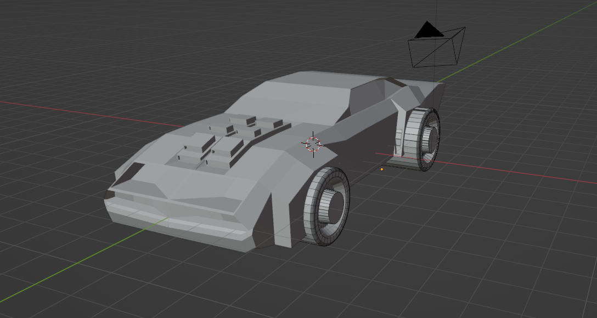
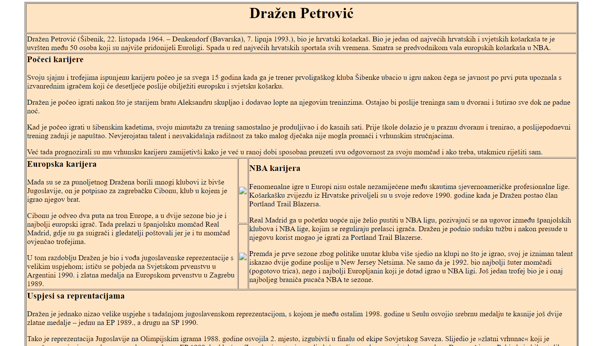
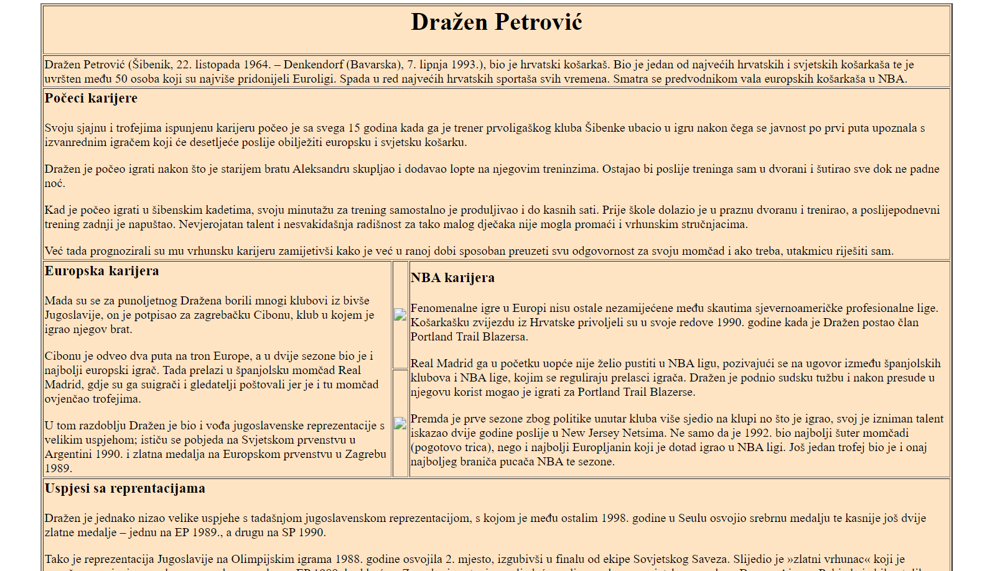

Ja sam Jakov Budak, dolazim iz Zagreba. U Zagrebu zivim cijeli život i trenutni ciljevi su mi da završim fakultet odnosno da upijem svo znanje koje mi pohađanje fakulteta nudi. Što se tice multimedije zanima me ponajvise html, ali počeli su me zanimati i drugi programi otkako sam upisao fakultet kao što su blender, photoshop i davinci resolve.
Moji ciljevi za budučnost ako sve pođe po planu su da se zaposlim u multimedijskoj ondosno grafičkoj struci. Još se nisam odlučio koje bi dodatne 2 godine odabrao, ako završim prediplomski studij. Razmišljam između grafičke tehnologije i multimedije, ali trenutno idem korak po korak još imam velik put za preć do 4. godine.Projekt u blenderu (model auta)
Djelovi html stranice (tema NBA liga)
 
